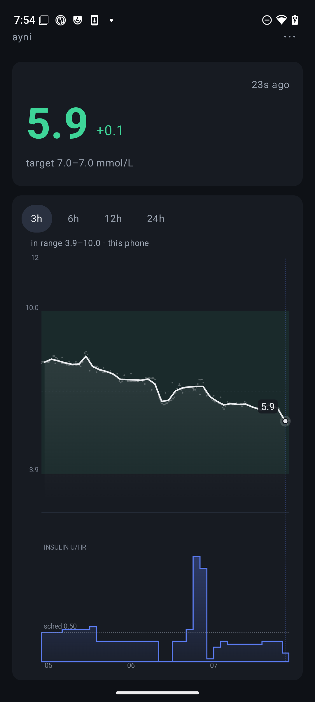
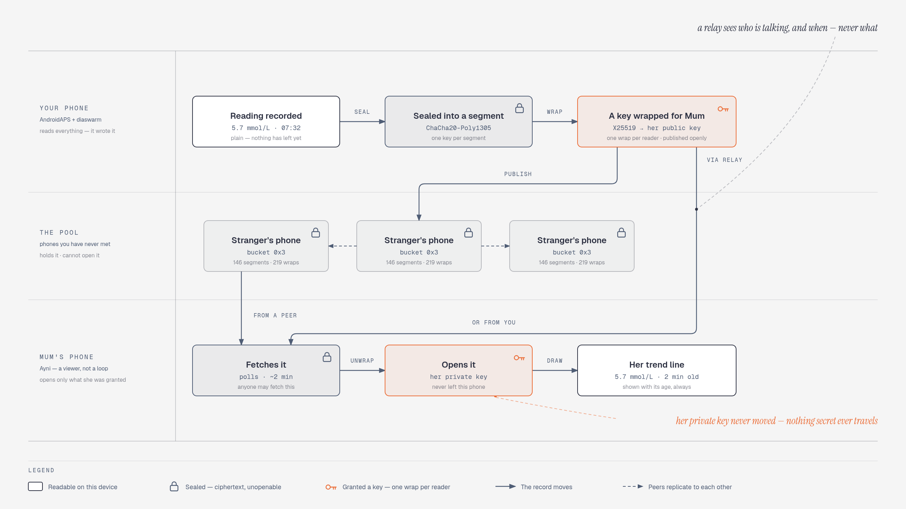
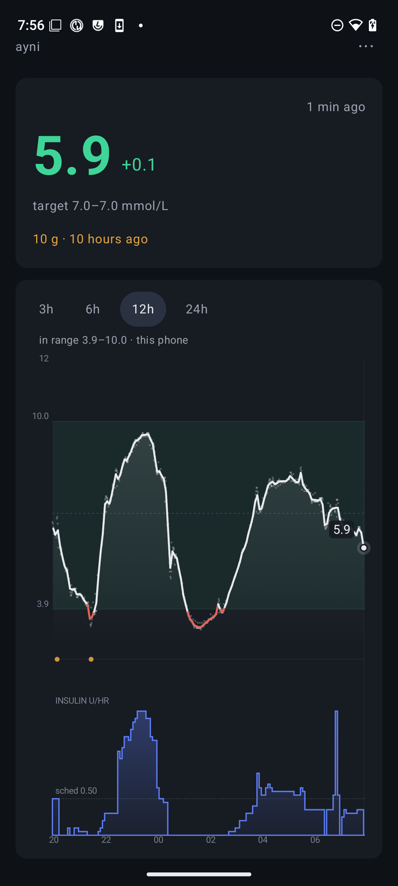

Part of the diaswarm project
Ayni is a viewer for one person's continuous glucose — a partner, a parent, a child, someone in your care. It is nothing else: no loop, no pump, no insulin.
Readings are sealed on the sender's phone before they leave it, travel directly between phones, and only someone handed a key can open them. There is no account, no server holding your data, and nobody in the middle who can read it.

Read this first
A follower's most dangerous failure is not an error on screen — it is a number that looks current and is nine hours old. Ayni is built around that fact, and it is honest about its limits.
nz.diaswarm.ayni) that installs alongside AndroidAPS, never over it.Features
The whole design removes the server and puts access in one place: who holds a key.
Records are sealed on the sender's phone before they are sent. Every holder in between stores ciphertext and can read none of it.
Withdrawing access doesn't ask a server to stop serving. The departing reader is simply not wrapped for the next segment.
There is nobody to sign up with and no cloud holding your data. Readings travel phone to phone.
No bare number pretending to be current. A stale reading is labelled stale, because that is the failure that matters.
Phones hold a share of each other's sealed records, so your data stays reachable while your phone is asleep — and they can read none of it.
On the same wifi it's direct. Anywhere else, an iroh relay introduces the two phones — and still cannot read a byte.
Get connected
Install Ayni from F-Droid. On its own it does nothing until someone shares with you — that's not a bug. Pairing is a single scan, and it works in both directions at once.
Ayni shows a QR invite. Showing it opens a short window in which the sender's phone will accept being paired back — outside that moment, an uninvited offer is refused.
The person sharing scans your code. Their phone grants you access and hands back its own address in the same movement. The trend line appears.
How it works
The padlock is on for the whole of the middle. The pool holds the ciphertext and serves it to anyone; only a granted reader's private key — which never leaves their device — can open it.


Desktop apps
diaswarm-peerEvery other holder is a phone, and the promise that your data stays reachable while your phone is asleep rests on someone having the bytes. One mains-powered desktop peer makes that structural rather than a matter of luck. It can read none of what it carries.
peer-v0.1.7, compatible with Ayni 0.1.7 — from
the releases page.
There's a native build for each platform, so running one is downloading a file, not installing a toolchain.
| Platform | Binary goes | Service file (keeps it running) |
|---|---|---|
| Linux | ~/.local/bin/diaswarm-peer | systemd/diaswarm-peer.service → ~/.config/systemd/user/ |
| macOS | /usr/local/bin/diaswarm-peer | launchd/nz.diaswarm.peer.plist → ~/Library/LaunchAgents/ |
| Windows | %LOCALAPPDATA%\Programs\diaswarm\ | run windows/install-task.ps1 |
Run it with no arguments and it carries a share of the pool. It can also follow a subject you've been granted and turn that into something a clinic can use:
diaswarm-peer # carry a share of the pool, read nothing
diaswarm-peer identity # the string a subject grants
diaswarm-peer read --subject <id> --days 1
diaswarm-peer export --subject <id> --out day.csv
diaswarm-peer summary --subject <id> --days 90 --patient <id> --report agp.html
diaswarm-peer nightscout --subject <id> --out ./nssummary is the clinician's view: an HL7 CGM FHIR document — time in
range, mean glucose, GMI, variability, days of wear — that validates against HL7's own validator
with zero errors. Nothing here ever dials a server; these are files you choose to hand over.
loginctl enable-linger "$USER" after enabling the
service, or systemd stops it when you log out — so an "always-on" carrier runs only while you're
logged in, which on a server is rarely.
Honesty & limits
Someone may make a 3 a.m. decision based on what this shows. So the costs are stated plainly, not buried.
The full assessment — architecture, costs, and the language that must never be used about this — lives in the repository's feasibility notes and decision log.